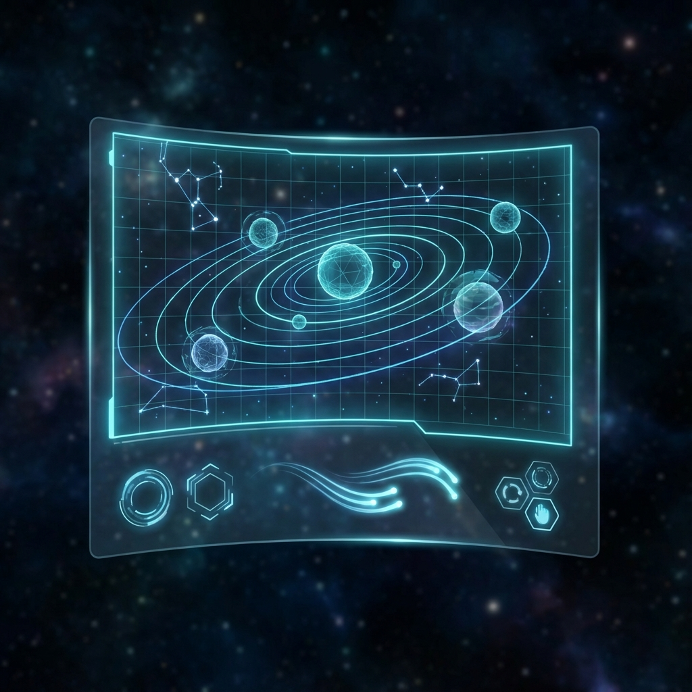
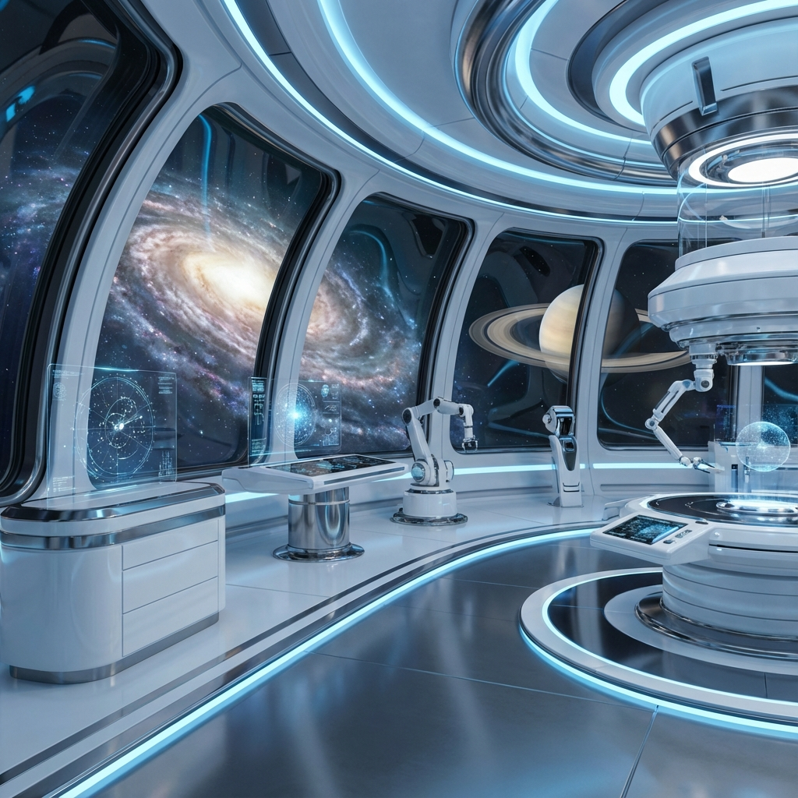

BEYOND INFINITY
探索宇宙的终极奥秘。从微小的夸克到宏大的星系，
在这里，我们将所有的已知与未知，以最前沿的视角呈现。
Cosmic Tools

Holographic Star Map
Real-time interactive star chart. Track constellations, planets, and ISS trajectory in 3D space.

Exoplanet Laboratory
Analyze atmospheric composition and habitability data from Kepler and TESS missions.
Universal Data
The Red Planet
Target for colonization. Home to Olympus Mons, the largest volcano in the solar system.
Lunar Gateway
Earth's only natural satellite. The perfect staging ground for deep space missions.
Singularity
A region of spacetime where gravity is so strong that nothing can escape.
New Worlds
Planets outside our solar system. The search for extraterrestrial life continues.